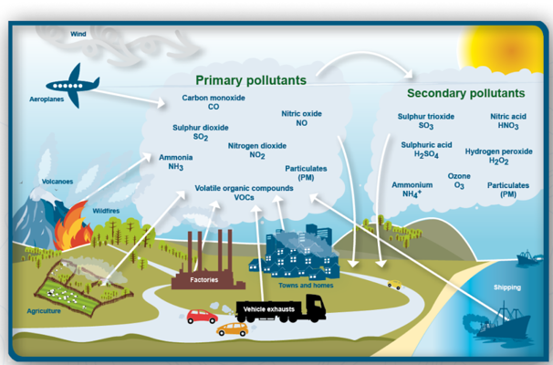
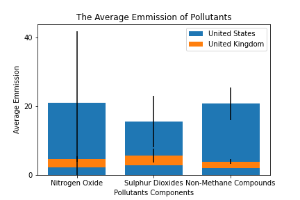
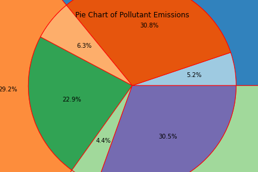

|
The Earth is consistently evolving. There have been many centuries of industrial development that has lead to various harsh distributions of debris, and pollutant emissions within the atmosphere.
The rate of human production has superseded the natural Earth's ability to filter, and maintain optimal status.
For example, there are several health circumstances that are being taken place that can potentially be caused by high concentration of pollutants that are being discovered
in various areas. Although, these molecular constituents are necessary for both natural and industrial development, the aggregation of such bi-products could results to
negative side-effects. For instance, the surplus of salt contents, such as Sulphur Dioxide, or Nitrogen oxides could lead to severe weather patterns, or contribute to
various health defects, such as lung disease.
Our current study has been regarding analyzing data sets that pertains to recording the number of pollutants that are found within differentiated regions.
The were also, data frames that concentrated on monitoring population growth activities, such as death rates due to pollution, and education rates.
The data sets that are being analyze are pertinent to understanding the connections within various test statistics, and data correlations.
During our analysis, a null hypothesis revolved determining the relationship status of pollutants and human activity.
The datasets that were utilized were joined and act as comparable of the essential activities that often correlate to the independent variables.
However, our data analysis starts with the thorough review of the type of pollutants that can be found within our atmosphere.
By definition, pollutants are considered to be any type of concentration of contamination found within essential resources, like air and water.
The aggregation of these pollutants can lead to defects within both the environment, and it's habitants. They can also become determinants of area survival, along with progress. Pollutants are detrimental to the consistency of the molecular concentration.
Extreme oscillation of molecules within our environment often leads to mutations that inevitably cause medical defects within the health of all habitants in the environment.
The following pictogram introduces the four pollutants that will be discuss during this research study:

There millions of particles of Nitrogen dioxides, Sulphur dioxide, volatile organic compounds being emitted into the atmosphere daily, especially within high industrial regions.
The gas emission from steam boats, vehicles exhaust, agriculture, and factories contributes to over 90% of the pollutants that are found within our atmosphere.
Nitrogen oxides:
Nitrogen oxides are emitted during the combustion of oil by two mechanisms; high-temperature thermal fixation of molecular oxygen (O2) and nitrogen (N2) present in the combustion
air and second, reaction of atmospheric oygen with nitrogen-containing compounds in the fuel. This is crucial attribute to the pollutant and its effect to both the atmosphere. The combustion
that occurs with fuels sporing into the atmosphere are often reason for dense smog level found within certain regions. The rise of nitrogen oxides contribute to increase defects
within the lungs. It can lead to chronic lung disease. It is also harmful to vegetation, which effects crop yield and growth.
Sulphur Dioxides:
Sulphur dioxides is a colorless gas or liquid with a repugnant odor. Its occurs due to the burning of fossil fuels(coal and oil) and the smelthing of minerals ores (i.e aluminum, copper,zinc, lead, and iron)
that contain sulfur. Sulfur dioxide dissolves easily in water to form sulfuric acid. This pollutants is also determentally affects the respiratory system. It can irritate the eyes, and the respiratory tract
while increaseing the risk of tract infections. It causes coughing, mucus secretion and aggravates conditions such as asthma and chronic bronchitis.
Non-Methane Organic Compound:
Propane, actelylen, ethen, and five-carbon compound isoprene, are type of nonmethane hydrocarbons that are importan reactive gases in the atmosphere. They provide routes for hydroxyl radicals
and play key roles in the production and destruction of ozone in the troposphere. Nonmethane hydrocarbons help define the tropospheric oxidant balance and air quality by influencing the concentrations of nitrogen oxides, and ozone.
Our data explorations, begins with comparing the amount of the different quantities of emission of the these four pollutants that are found with significant regions. As indicated on the table
below, it was found that the United State region consist of a high concentration of sulphur dioxides, nitrogen oxides, and non-methane organic compounds. Based on the chart, it can be intepreted that the United States is responsible for
large qauntity of the pollutants found within the environment. This is crucial within understanding the various production, health activity that will later be discussed.
This chart is an additional visual that validates the analysis of Nitrogen Oxides to be primary pollutants currently found in the atmosphere. It can also be observed that is most of the pollutant are also contracted within the United States. Averages are significant
statistical measures that validate various data outcome patterns. This is because its an overall analysis of high data quantities that define variables in question.
| United Kingdom | United States | Total | | Nitrogen Oxides | 108.85 | 648.13 | 756.98 | | Sulphor Dioxide | 133.50 | 482.55 | 616.05 | | Non-Methane Compounds | 92.22 | 642.48 | 734.70 | | Overall Total | 334.57 | 1773.16 | 2107.73 |

This actively displayed within the following pie chart of the of the concentration of the Pollutant found within the atmosphere within each region.Based on the pie chart it can observed that Nitrogen Dioxided consist of 35.9% of the pollutants found within the atomosphere.
And 30.8% of Nitrogen Dioxide emissions are from the United States. The nested pie chart enable there to be a comparison of the proportion of the emissions pollutants with both regions.

|